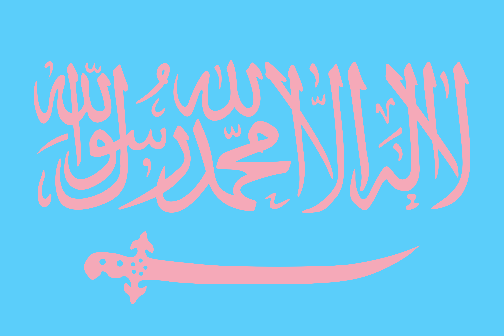

y es que la realidad es que no sé si vamos a poder ser amigas
porque me gustas muho y me encantas y vivo por ésto
cuando esa chica vio que hablaba por whatsapp con un tal (tu nombre) me dijo
ya le verás cuando vuelvas a barna
y yo le dije
no creo
y la chica se calló
22/07/24 12:50
otro
diario
me hace daño
cuando me hablas de la nada y despiertas de nuevo en mí
aquello que tanto me cuesta apagar
supongo que soy un pirómano
y tú un psicópata
//podría ser una canción ésto
16/07/24 17:32
otro
idea
cuando llegas tarde al trabajo
hay tantas cosas que de repente se profanan lo sacro de las horas
lo sacro del trabajo en si
lo sacro de la obligacion
que pensaria confucio?
se confundiria?
15/07/24 08:32
otro
diario
cuando ayer berta me dijo
que no proyectase cuando dije que me daba vergüenza enseñarle lo que hacia aquel chico
(quizá ya hombre) de granada del que me enamoré una semana
tenía un proyecto musical que me dio cringe cuando lo descubrí
y berta, como siempre, lo clavó
mi miedo más profundo es un miedo con tantos años que ha perdido la voz que ha perdido las palabras
y yo no lo veía solo lo sentía
cuando suena una canción que me gusta, lo siento
me da miedo cantar me da mucho miedo cantar
quizá es por ello que me calme escribir
porque se siente un susurro
y un aprendizaje
se siente como hacer pesas de pocos kilos cuando empiezas a ir al gimnasio
se siente increíble cuando me miro al espejo y veo cómo escribir me ha cambiado
como si estuviese trabajando algo que esta encorvado en mí como si estuviese desarrollando esa musculatura que en aquel momento
decidí de dejar de usar
y cuando quise volver a ella
ya estaba herida
y preguntaba "todo este tiempo vienes ahora
qué esperabas?"
es escribir mi rehabilitación como cantante?
o es otra de las muchas partes de mi voz que he de descubrir aún
es el lenguaje el vehiculo de mi alma?
//supongo que lo que estoy haciendo
//es recuperar el aire que me quitaron
pese a lo triste que sea escribir algo tan sacro en un metro lleno de gente a primera hora yendo a una oficina
es fuerte notar cómo mis dedos se extienden más allá de la pantalla de mi móvil
y tocan las letritas que hay dentro,
el orden mi alma lo dice
es fuerte notar cómo en mi no hay nada no hay más voces,
notar cómo cuando conecto es el único momento en que soy un uno con sentido
y cuando conecto es el momento en que mi unidad se siente menos unidad
siento que ha llegado el momento de emerger del océano de la apatía
mucha agua es también ninguna, y la falta de aire supone que me he de ahogar en este agua
cuando recuerdo que todo es una totalidad a la que pertenezco y perteneces y pertenece el manu que dejó de llorar por mí
y pertenece aquel chico del que me enamoré aquella semana y el chico que ha dormido hoy conmigo, que hoy también se ha ido a granada
y al que pertenece este manu
que escribe
y escribirá
15/07/24 08:21
otro
diario
y pensar
que yo siempre pensaba
que nunca me gustarían los poetas
15/07/24 07:49
casa
diario
escribir
es un scto de solemnidad
es un acto sacro en si
es dar un espacio y un tiempo a una vision de la comciencia
a un trocito del todo es señalarlo y subrayarlo
para así poder meditarlo
que hay de diferente entre este poema?, FMA, y la vida?
y me doy cuenta que nada que todo es uno y lo mismo
qué bonito recordar espero que consiga haceros sentir lo que yo ahora mismo
qué bonito es amar
15/07/24 07:15
casa
diario
lo único
que no me gustaba de ti
era tu escepticismo
aún te queda un poco
como cuando te da vergüenza que alguien sea uno mismo
quién pensaría hace tantos años
que alguna vez dirías éso
15/07/24 07:12
casa
diario
es horrible lo que se siente cuando tienes curiosidad de lo que pasa tras la muerte
pero no es una curiosidad exploradora,
ésa la conoces bien de cerca
es un si la vida es ésto... qué puede haber fuera de aquí que sea peor
y sólo se te ocurre éso
el motivo que yo esté aquí es una mezcla de intuición de hatsune miku
y de suerte
15/07/24 07:08
casa
diario
las cosas que pone mushoku sobre la mesa son muy interesantes
sobre poliamor
o sea que sí, que es un hombre y son dos chicas que son más parte del plot del protagonista
que personajes en sí
pero es que si no fuera así
igual no habría llegado a tener anime porque no sería tan facil de tragar
y yo no lo habría visto porque no habría leído ese manga
y no habría pensado ésto
09/07/24 20:39
casa
otro
un espíritu travieso
que te esconde un calcetín cada vez que cierras la lavadora
pero en la siguiente lavadora lo intercambia por otro
04/07/24 22:32
casa
idea
lo poco que he aprendido de mi madre
y mira que es poco la verdad
me gusta usarlo
como el tender la ropa por las axilas
darle la vuelta a la ropa para tenderla del revés y que no se le vaya el color
del calor
no sé
quizá es por ello que me gusta tender
porque me lleva a un lugar donde mi madre es mi madre
donde estoy seguro
y donde la veo
la madre que yo llamaba mami
no la que empecé a llamar mamá y luego madre
nunca tuve un papá o un papi
ya ni recuerdo lo que era tener un manolo
no recuerdo cuando empezó a obligarme a llamarle papá cuando se divorciaron
y a mi no me salía, no podía mentirle
para bien o para mal
y ahora es padre
el forzarme a llamarle papá o papi
es horrible lo que sientes cuando te fuerzan el idioma te quitan el aliento
me hacía muchas veces
no poder hablarle
las palabras se me atragantaban
y me faltaba el aire
algunos recursos eran un "oye"
o una pregunta directa
y recuerdo que en algunos me pillaba y me obligaba a decirlo
las palabras que no sentía
esquivaba el vocativo
porque hacía incómoda la obligación
porque cada vez veía menos a ese manolo
que para mi podría ser más caro
que el falso papá o papi que él me obligaba a proyectarle
que mi padre me enseñase a llamarle manolo y no papá en su momento
y luego se arrepintió
pero ya era farde
y dijo mejor tarde que nunca
para ver si tiene cojones de volver a decirme nada sobre mi pelo cuando vuelva a bajar
a ver si los tiene
04/07/24 22:09
casa
diario
he soñado que bajaba a cadiz
que me reencontraba con platos que me gustaban mucho pero creo que me inventé en el suelo
y que tenía coche
que a la vuelta volvía en coche pero iba en el asiento trasero
inclinado entre los dos asientos delanteros y controlando como podía el volante con los brazos
sin acelerar ni frenar
y llegué a una rotonda la salida donde tenia que salir estaban de obras
y no podia frenar
intenté aparcar el coche a un lado
pero claro, no podía frenar
y como no podía frenar caí en un agujero
y en la caída me convertí en un pokemon
pero no recuerdo en cual
durante toda la caída una voz me decía
que era un proceso normal que no me rallase
que saldría de ahí
03/07/24 06:06
casa
somni
idea de nombre de disco
para los que nunca me pidieron perdon
((igual en inglés?))
28/06/24 15:40
otro
idea
me gusta sentirme potente
no impotente creo en la potencia
despiseo la impotencia
25/06/24 17:17
casa
noDiario
si este escrito quedara por siempre
espero que me ayude a recordar el camino hasta aquí
23/06/24 04:55
rzm
main
lo hemos olvidado chicas
lo olvidamos y cuando vuelve somos increíbles
y se vuelve a ir
y se va constantemente
cuando viene no lo reconoces y cuando lo reconoces no te lo crees
y cuando sabes qué es y que estás no puedes evitar pensar
que en algún momento se acaba
por mucho que hagas
cuando ya no hay vuelta atrás cuando lo entiendes cuando lo recuerdas
y ya no estás
23/06/24 04:47
rzm
noDiario
mira no sé si ésto es una fumada o qué
seguramente lo sea porque vas de porro y de lsd lol
pero todo es volver a ese uno
y sí, si que vas tripadísima tía si las letras parecen iridiscentes y tienen como distintos colores como si estuviese escrita en la pantalla de un led que fuerte guardo el móvil
en twitter lo practico mucho
mola cuando algo esencial se deshace por adición de algo extra
llegas a lo esencial y lo haces crecer sin querer
15/06/24 03:43
casa
noDiario
una canción
al final es una narración rítmica de personajes
15/06/24 00:49
sonar
main
las joyas creadas por artesanos eran uno de los objetos mas mágicos que existían
un amuleto hecho desde cero a manos de alguien que trata la materia con mimo y cariño
cualquier cosa puede devenir filosofal
08/06/24 01:56
casa
noDiario
los cantantes sí tienen esa cosa
de que escriben álbumes como si fuesen mitologías
de que charli xcx o beyonce cuentan sus vidas sus historias
pero al final éso es un conjunto de cosas que ellos han curado
charli xcx no es su nombre "verdadero"
pero es, seguramente, más charli xcx que su nombre de dni
meowrhino tampoco es mi nombre de dni
(ni petra)
ni manu
y con esos nombres podemos llegar a cosas divinas
a mitologias
son nombres ilimitados
historias
y de eso va el pop
porque de éso va todo
igual eso es el vacío del pop que no entendía en el TFG cuando hablé de los vacíos del pop
no entendía que había todo ésto aquí que siempre ha estado y siempre estará
ojo que:
No es que el pop esté repleto de estos vacíos, sino que el pop vive en estos vacíos. El lenguaje, en sus huecos aloja al pop
El pop está conectado con el mundo y su casa son esos huecos donde pasan cosas.
porque el pop es uno con el todo
como todo
08/06/24 01:51
casa
noDiario
en mi taxi subían y bajaban historias
yo solo las acompañaba a dormir
02/06/24 05:16
PS
idea
atarashii gakkoo
es totalmente el arquetipo de cuando me encantaba terrorism de neru igual sí me deberia
tatuar ese símbolo recuerdo que me giraron mucho la vida sus caciones
02/06/24 01:48
PS
diario
creo que nunca habia estado tan tranquilo como ahora viendo anime fumado tirado en
el sofa
es paz esto eh
creo que cuando vivi solo en vilapicina lo mediosentia, pero en cualquier momento me podría llamar mi
padre
y romperme el mood
cuando vivia con mi padre o antes con mi madre nunca podia estar 100% relajado porque siempre
comentaban algo
que si mi madre me escuchaba cantar queria que le cantase cuando mi padre me vio hacer musica y me pidio
que le enseñase y me dijo que menuda mierda
cuando mi madre me pregunta que que hago en la uni para un mes mas tarde volver a preguntarme y presumir de
lo listo que es su hijo
o mi padre terminae cada conversa ion com un "nwcesitas algo" que significaba que esperaba un no y si venia
un si siempre se comentaba la necesidad "para que quieres eso???"
ahora es la primera vez que puedo pedir algo y nadie comenta o me da absol it amente igual lo que me diga
berta porque hay un vinculo de mutuo caeiño y comprension
con gonchi no lo habia como ese dia que me dijo que julieta era una pija tonta y que para que iba a ir a
escucharla
la gente es muy pesada y ahora estoy mas liberada que nunca quiza por eso me encanta twittear canciones
de vocaloid
porque es como esto soy yo que os jodan si no os gusta me da igual a mi ME GUSTA
y NO os vais a reir
como ese alejandro del centro ingles que en primaria me pidio que le pasase una cancion de hatsune miku
y se la pase
y se rio de mi
capullo
espero que te vaya genial en tu vida mediocre
y que nunca te atrevas ni siquiera a dirigirme la palabra
si no te has arrepentido de todo el daño que de niño me has hecho
y no solo tu, y se que si los demas que lo han hecho leen esto
se que sabran quienes son
capullos
18/05/24 13:59
casa
noDiario
supongo que es un no diario o un main
supongo que m proyecto es la desintimación la expansión del aura personal
siempre he crecido conteniéndome qué pasa si ahora activamente emito???
emito este aura esta gracia
todo el mundo emite un aura y cada uno lo construye poco a poco la sensación que quieren causar en los
otros los cambios que en los otros les gustaría ver cómo su mundo quieren cambiar cada uno y todos
entonces es eso mi proyecto notas y es eso mi proyecto hopeko
un brillo sin más
supongo que esta nota es la primera que acabo de hacer frente al espejo y me deslumbré 💫
ahora lo tendré que pensar 🌟
adéu 💨
18/05/24 13:41
casa
noDiario
13/05/24 20:06
casa
noDiario
hacer sesiones de terapia con chatgpt
sesiones de una hora transcribirlo y guardarlo y publicarlo
ver si es verdadero o lo ficciono peor que sean sesiones de verdad de 1h o 45 mins
11/05/24 10:02
casa
idea
mi dream job literal sería
dormir comp 12 horas al día y pasar sueños a limpio y publicarlos como aventuras oníricas de
manu seria chulísimo
pff es buenísima idea para un diario de sueños un diario de sueños publico
tendría que censurar a la gente supongo los nombres
o ponerles un código
10/05/24 20:51
casa
idea, no diario
los festivales de música
son lo mas cercano a una bacanal actual
música todo el rato comida bebida alcohol drogas gente muy pasada con muy poca ropa
no hay orgías (bueno depende de la discoteca) (pero en la discoteca no hay exterior ni en el exterior hay
templo)
pero sí musica baile comida bebida drogas
5 drogas literal
y amor y sexo por todas partes
qué fuerte
10/05/24 20:10
casa
idea
hay algo en mí que me lleva a querer entender el núcleo de las cosas
y es como que si lo veo me chifla
sabes?
es una locura
primero me pasó con las mates en algún momento con las ciencias y luego me pasó con los idiomas casi
me
pasó con la filosofía, sólo que no sabía cómo empezar con éso
y con algunas cosas que leo me está pasando y me acuerdo perfectamente de momentos en los que me
pasa supongo que será el vuelco que
llaman
como que de repente pam lo entiendo
y me encanta me obsesiona
y paso a otro fragmento de la realidad a otro trocito del todo
supongo que ahora que lo pienso así lo que hago es ver el camino al todo y su pertenencia y cuando lo
entiendo, con la lógica que no la razón, que estoy empezando a entender la realidad de la que habla parménides y
su diosa en atalanta
10/05/24 19:55
casa
noDiario, rtf
intercambio de pronombres
una cesta con muchos stickers con distintos pronombres y distintas combinaciones y coges uno te lo pegas a
la
camiseta y durante ese dia te tienen que hablar con esos pronombres
08/05/24 17:28
otro
juego
nombre de cantante
PETRA
08/05/24 12:29
otro
main
la transnumeridad
y la alquimia de uno mismo
si hay gente con muchas casas por que no voy a ser muchos manus
la idea de tener muchas personas mola permitirte hacer log-in en distintas personas
además de lo esquizo-mágico que puede ser no?
tienes miedo? si consigues averiguar qué partes de ti tienen miedo que partes no lo tienen incluso
podrías crear una parte de ti nueva que sea coherente con tu quorum interior y ya no tener miedo
siento que podría ser como algo de autoayuda pero para mi es mas panpsiquismo (o la que sea)
y la idea de que
o sea ya lo demuestran la gente con personalidad múltiple que lo vemos como una patología o como una
"discapacidad"
pero al final el tú que eres con tus amigos suele ser distinto al tu que eres en el trabajo al tú
cuando
estas solo en casa al tú con un amigo y al tú de otro amigo
si lo haces consciente esto y eres capaz de volver a integrarlo en el inconsciente
no serias capaz de todo? claro esta, entendiendo los rituales que necesites para que psicologicamente
tenga
éxito
06/05/24 18:25
casa
main
y si las constelaciones
fuesen dibujos de arquetipos que los que los crearon sabían que llegarían a nosotros
el recuerdo de poder juntar estrellas en el cielo
e invocar sus imágenes hacerlas permanentes, eternas o incluso crear unan nueva
y el entender que recordqste algo que alguien dejó para ti del pasado hasta ahora
un tesoro una superhiperstición
05/05/24 04:53
casa
rtf
sería místico
y si nuestro @ fuese nuestro nombre verdadero
recuperqr lo sacro del nombre verdadero
como en un mago de terramar
al fijar nuestro @ sólo si nuestro @ se alinea, consigue dar en el clavo o se convierte en nuestro @
deseada
es su nombre verdadero y tiene poder
y si llamas a alguien por su @ llamas a todos con la misma @ seria un tipo chulo de red social
en plan que las @s no sean únicas sino que mucha gente pueda ser @manu o @meowrhino
y habrían chats entre @s distintas y chats en una misma @ entre gente con la misma @
¿igual habrían @s secundarias, como apellidos?
hablemos, no puedo crear esta red social sola, si te interesa, escríbeme
05/05/24 04:49
casa
idea
en insta
sólo una cuenta puede tener un determinado @ los @'s son propiedad privada, que al igual que una
tierra
sin propietario, el primero que llega, la clama como propia
y si no fuese así? en plan a diferencia de las tierras, igual podrían haber varios usuarios con la misma
@ creo que en discord funciona asi
05/05/24 04:48
casa
idea
quiero ver si
puedo capitalizar el ser yo porque es lo que llevo investigando todo este tiempo
incluso molaría que funcionase a nivel político como
quiero ser yo para ser yo no puedo trabajar y para ser yo construí todo este discurso porque para
ser yo
necesito dinero y para trabajar tengo que dejar de ser yo
así que a éso vine a decir ésto e irme
adéu
05/05/24 04:37
casa
main
idea
hacer una base que suene bien con el sonido del kirby spark
primero has de encontrarlo solo y luego ver de hacer una idea musical que tenga sentido
03/05/24 21:24
casa
idea, musica
mola que en kirby
las estrellas sean transporte y las estrellas sean el poder que se te escapa cuando te das un golpe o te
despistas
también los monstruos se convierten en estrellas cuando los absorbes
y cuando caes si eres muy grande generas estrellas
de kirby saco estas conclusiones
el poder caduca si no está dentro de algo, pues su forma de estrella es efímera ha de estar en kirby, ya
sea
en potencia (pre-tragar) o en acto (post tragar) kirby convierte el acto en potencia
el poder es algo que existe en la naturaleza y que, en la naturaleza, se regenera (respawnea) cada
animal
tiene un poder, aunque muchos su poder es el vacío, la cáscara (la estrella) (como waddle dee, el vacío
por
excelencia, el casi kirby que no es kirby por ningún lado)
el poder primero es el rayo, por waddle doo que es un waddle dee que ve, y se vuelve rojo
sólo puedes ejercer un poder a la vez (ya sea en forma de seres naturales o "monstruos" o en forma de
kirby
y para cambiar a kirby vacío o a kirby de otro poder has de hacer un logout y un login
de la misma manera que cada trabajo tiene un uniforme pero no es cada trabajo el uniforme (??? no
sé???) con cada ropa que nos ponemos configuramos un estado mental a partir del físico
de la misma manera que en algún lugar leí que la cirugía plástica te desconecta de las emociones pues si
no se
puede manifestar el poder, el poder se olvida como cuando te olvidas para qué era cada botón en cada
estado
y el poder es una estrella con satélites de pequeñas estrellas
mola
03/05/24 20:22
casa
rtf
al final el dinero
no es una falsificación un imposter de la piedra filosofal?
esa sustancia dorada (antes oro luego metales luego papel, también fue sal y de ahí salario) que puede
convertirse en todo
hasta el orden de los billetes de euro el de 200 oro el de 500 purpura color del misterio y el
lujo (y el feminismo, que mola que flipas también)
03/05/24 17:03
casa
rtf
claro que eeuu fue donde el primer humano construyó el primer rascador de cielo
02/05/24 20:24
casa
idea
leyenda programmer request
y así igual los noDiarios tienen un formato, en plan podrían ser en la fuente serif por defecto
la leyenda en otro formato, igual que estuviese fija abajo a la derecha y se pudiese desplegar y replegar con
un botón
los mains en la fuente mono por defecto
las ideas en la sans que toque
los misc en grisecito, en mono quizás también? o en sans?
los rtf en mono que flipas igual más peques y como ligeramente azules
pf y los diarios en una fuente serif pero como en grisecito que sea como handmade igual esta no sería la por
defecto
11/04/24 19:51
casa
main
debería añadir una leyenda en el proyecto de notas
y que cada categoría tenga una explicación abajo del todo
molaría que fuese un pop-up
que pudieses desplegar
y que estuviese flotando en algún punto de la pantalla todo el rato, seguramente en la esquina inferior
derecha
y que las categorías fuesen
ideas: ideas de cosas que me gustaría hacer pero si hiciese no tendría tiempo para seguir
teniendo ideas
noDiarios: pensamientos que pienso de vez en cuando a veces son complicados otras veces no tanto
main: pensamientos sobre este proyecto en sí
rtf: suelen ser historias más narrativas, en un limbo entre sinopsis y microrrelato que no me
queda muy
claro
misc: notas que no debería olvidar y sé que si dejo aquí recuperaré en algún momento
diario: fragmentos de diario que tiro por aquí también, su versión completa es un archivo local
de mi
escritorio que se llama “diario personal.rtf”
11/04/24 19:35
casa
leyenda
sala d'art jove presenta sala d'art jove
presentar proyectos que sean muy “sala de art jove”
como "las migas de mi abuela" o "el verano en el campo"
10/04/24 23:03
casa con berta
idea
idea de expo con berta
hiperobjectes: hiperojetes
el baston con el puño de mi padre
el padre de berta
"
el tweet viral del padre de max "a ver si este domingo vienes"
camiseta con esta bandera

10/04/24 21:55
casa con twitter
idea
alquimia y las chicas mágicas
ver por primera vez la transformación de nanoha en el primer capitulo
es todo un viaje
y lo relaciono con imaginar
crear una imagen y traerla al mundo
el fin alquímico
la diferencia entre dioses y no-dioses
poder solapar el mundo real con el imaginal propio
invadirlo
y nanoha cuando imagina hace
imagen, en japonés, nanoha dice
literalmente imeegi shite, que tu hagas en presente de subjuntivo imperativo, haz imagen)
es fuerte, eh
qué habría pensado jung si estuviese viendo
conmigo este primer capítulo de anime de chicas mágicas
me encanta cóm se siente no sólo el conectar con ésto sino el momento en que lo noto saliend de mis dedos y
cristalizándose en un texto delante mía
un texto que antes no existía
creo que me gustan las canciones porque es lo mismo, más abstracto y complicado aún
porque aquí hay palabras las veo todas más o menos a la vez y para leerlas tardo muy poco y son hechizos que
me llevan exactamente a este momento a esta sensación de conexión que está aquí ahora mismo
de conexión entre lo que está habiendo fuera de mí que está cambiando gracias a que lo que hay dentro de mí
está saliendo y quedándose fuera
saliendo por mis propios dedos
¿es ésto al amor adicto?
10/04/24 18:16
casa
diario, magia
me imagino a los que escribieron la biblia como
qué carajo acabamos de escribir
en plan ??? me explicas
y me encantaría saber cómo se vivía en el día a día
saber cómo se empezaron a activar estos textos
y a devenir religiones
algo que hoy está superfijado como la ciencia
o la futilidad de las letras
y la inexistencia de lo improbable
(en tanto que difícil de acontecer como aquello indemostrable)
pero en aquel entonces
cuando el cristianismo irrumpió en roma
también sería como
en qué estafa piramidal te metiste ahora???
igual hasta se veia a jesús como una figura “reciente” y “demonizada” como h1tler en la época, a saber qué
cosas podrían haber pasado que sólo ellos supiesen de jesús y que ya hemos olvidado
pues la religión como proyecto ha sido todo un éxito
generar una historia a través del tiempo y que ese control sobre este elemento le de poder al elemento en sí
10/04/24 17:45
casa
no diario, magia
el gato negro
es que no me puedo creer que podamos imaginar cosas que no puedan ser
como imagínate la 4a dimension
¿a que no eres capaz?
porque para ti ahora mismo es imposible
pero en cambio si puedes imaginarte moviendo un vaso
porque esta en tu imaginario y en el fondo eres capaz pero no sabes cómo
también pasa con cosas mas sencillas
imagínate conquistando el mundo
no eres capaz, ¿no?
pero hay gente que sí
y hay gente que lo ha hecho realidad de hecho
¿qué es mas difícil conquistar el mundo o mover un vaso con la mente?
no sé eh
a mi me suena que estamos pensando esto de manera equivocada
y que tenemos evidencia historia de lo primero porque no rompe con la tradición matérica y científica
pero que si lo y no sucedio
¿quién no tiene algun amigo que le haya contado algo que no pueda explicar?
quizá debamos comenzar a indagar en lo inexplicable
como un escritor que traza una historia que no existía antes
¿la crea o la descubre?
me parece osado decir que podemos crear cosas de la nada
porque si efectivamente podemos, entonces nada es imposible
y siempre creemos que hay dos tipos de cosas, las posibles t las imposibles, y sus fronteras nos vienen dadas
siempre por personas que
niegan lo inexplicable
igual los que tienen miedo son ellos
y no nosotros
y la curiosidad mato al gato
¿no es el gato negro
el eterno compañero de las brujas?
a veces pienso que soy "tan de izquierdas” porque soy autista
no entiendo por que hay gente sin casas y casas sin gente
o por que habiendo comida para todos no la hay
no sé si yo me estoy perdiendo algo
o la gente está muy perdida
05/03/24 7:39
metro al curro
no diario
las noches que pienso en ti
me gusta dormir sólo con una sudadera
para que todo me roce
03/03/24 7:30
casa
no diario
pues era precisamente lo que queríamos
le venerábamos porque era capaz de alcanzar tal tristeza
que sólo sería capaz en el rito
y esperábamos decenas de años a ver si nos aceptaban el él
nos llenaba de júbilo sentirnos tan vacías
venerábamos y deseábamos ese golpe sagrado que sólo se puede sentir cuando nos hacemos daño
y tú todo este tiempo
has sido capaz de sentirlo todo este rato? te veneramos! te veneramos!
dios de la tristeza
01/03/24 16:33
casa
idea
es que es raro, ¿eh?
tú te lo notas, de mayor
el agujero que quedó en tu infancia
¿y ahora yo he de llamar al excavador? ¿a aquel que no quiso mirar atrás por miedo y siguió adelante hasta
atravesarme?
El que no paró y siguió hacia abajo a través de todo lo más preciado para mí, con las uñas de los dedos
largas como navajas bajando y bajando por todas y cada una de mis vísceras hasta dejarme vacío
el que sólo a veces sí miraba atrás para abrir lo cicatrizado y luego seguir con su camino. tenía que hacer
su trabajo bien, era lo único que hacía bien y éso le daba vida
pero era su único hilo con ella
por eso sólo miraba atrás cuando mirar adelante suponía enfrentarse a lo injusto
sólo miraba atrás cuando delante se le ponía un espejo y tenía que volver a buscar un nuevo “adelante” para
no volver atrás
en su no pensar
en su seguir
se supone que al hombre que me dejó este laberinto por dentro, que me dejó reducido a pasillos y aire en
lugar de materia e intestinos, de vida y de aquello que convierte a la vida lo que aún no es…
¿se supone que a ése imbécil yo, ahora
he de llamar
en mi cumpleaños?
29/02/24 18:31
casa
no diario
prometí no censurarme
a veces me llamaban egoísta pero siempre lo entendían
de dentro afuera, y vaya si tengo cosas dentro... menudo lío...
y poco a poco noto ese nudo deshacerse
noto la cuerda que lo forma quemarse, el contenido del nudo se deshace, no el nudo en sí
y me siento más ligero
como una cuerda que tira y tira de mí hacia la ingravidez
hacia flotar y el disfrute
hacia la nada
24/02/24 23:07
casa
diario
su trabajo era asegurarse que los productos se podían vender en el idioma nuevo
asegurarse que ningún nombre que no significase nada, de repente, significase algo
el guardián de las no-palabras
porque ellas no querían significar nada
y evitar que la gente lanzase significados
uno tras otro se les amontonaban y parecían tortugas, torres-islas que se movían por un mar flotante
y el guardián lo que quería era protegerlas de estos ataques
asegurar su integridad vacía
asegurar que nadie les leía
o veía
asegurar su fantasmidad
su transparencia su pureza su blancura
su deseo
24/02/24 22:30
casa
idea
una isla flotante que en su centro tiene un agujero
y es como un embudo pero tosco y flotante
y en realidad es un filtro para que las personas conforme caigan muten
esta mutación es tal que no siempre pueden reascenderla si se quedan a medio camino
y si consiguen bajar del todo por los paisajes los caminos las montañas y valles y bosques y lagos
habrán completado su mutación y serán por fin
24/02/24 20:08
casa
idea
un sordo que va a discotecas para sentir el bajo en la tripita
21/01/24 3:56
apolo
idea
hay 3 tipos de series que veo ahora que vivo contigo
las que veo cuando estás tú
las que veo cuando estoy sólo
las que veo cuando no estás tú
18/01/24
casa
no diario
un ejercicio de desinti(mid/m)ación
todo lo de dentro fuera
un puente
para derrumbarlo con la diferencia
que sea todo uno
y de igual
6/01/24 12:12
casa abuela
main
si dios es tornar a la unidad
que puede haber mas divino que el sentimiento que nace de la unión con alguien
es como lo más divino que podemos hacer
pese que igual a ojos de la unidad de todo sea algo tímido e incluso menos que un bostezo con la boca cerrada
un bostezo de sólo lágrimas
pero para nosotros es lo más poderoso que podemos hacer
es recordar la unidad y reinvocarla en los labios
4/01/23 11:45
avión barcelona jerez
no diario
no podemos escapar de que ya está todo inventado
y cuando algo nuevo aparece, recordamos su copia, recordamos su original
pero cuando el original fue inventado también pasaba ésto
sólo que ese original original se ha olvidado
31/12/23 7:07
upload
no diario
me puedo imaginar cosas que imagino que son imposibles de imaginar
31/12/23 5:27
upload
no diario
444
molaria como
invertir muchas imágenes
coger los tonos de azul que salgan
y con ellos hacer nuevas imágenes
pero que no parezcan negativos
sino que sean colores "reales"
de que cosas podrías pintar para que lo fuesen?
como una cara se convierte en un bosque oscuro?
en qué se convierte un paisaje?
31/12/23 4:44
upload
idea
idea de personaje
un hombre extranjero de 54 años belga que reserva siempre para cinco pero come solo como 1, aunque pide para
5 y lo pide todo para llevar
26/12/23 21:11
?
idea
que le diría a mi yo de 82 años?
que espero que haya aprendido a llorar
y que lo disfrute
23/12/23 5:33
apolo
no diario
el poder de bajarte las estrellas si quisiera
y tenerlo aquí
y te lo diera
23/12/23 5:30
apolo?
no diario
llevo años viviendo este día
23/12/23 5:25
apolo
no diario
que bonito que las gafas que me protegen de la luz del sol
son las que uso también para protegerme de llorar
me las pongo y lloro
en apolo, con las gafas
y lloro
23/12/23 4:59
apolo
no diario
humanos de sangre fría
y que pensar fuese mejor al sol
para hacerlo más rápido
18/12/23 4:35
?
idea
estaba triste
en el planeta entero sólo quedaba él
habia eliminado todo lo que no fuese él
y sólo quedaba él
dios le quería mucho
idea
mordía los espacios vacíos
el hueco lo llenaba
si mordía tu habitación
entre sus grandes dientes quedaría macizo, como desaparecido del plano, sus dientes siempre dejan cemento y
vuelven a su cara a través del cemento
14/12/23 18:41
?
idea
ejercicios fisio
espalda pegada a la pared, hacer presión con los codos durante 8 segundos y 10 repeticiones, primero con los
codos pegados y luego a 45 grados del cuerpo
desenvainar una espada hasta arriba por encima de la cabeza a tener una bandeja y volvemos a envainarla sin
perder de vista la espada
y la 2a parte como si estuvieses apoyado en una encimera la llevas hasta rascarte la oreja opuesta
2 planchas lo máximo que puedas con los codos apoyados
14/12/23 11:03
fisio
misc
me acuerdo
de cuando me dejó de gustar el amarillo
mi color favorito cambió
primero a verde luego a azul
luego recuperó el rojo y fue hacia morado
y volvió el amarillo
creo que en algún momento fue rojo también
y si con escribir es lo mismo
escribir es mi amarillo
mi azul es hacer cosas de arte
y mi morado es la música?
no quiero que me deje de gustar ninguno
11/11/23 9:08
?
no diario
y si los árboles caídos
se convierten en dragones
cuando se dejan dormir
9/12/23 12:40
?
idea
narrar ya es juzgar
porque contar una historia
es imposible
sin un juicio
8/12/23 7:38
?
idea
una torre que cae
y cae y cae
y no para de caer
imagina, pues eso, un vacío enorme
donde sólo hay gravedad
donde hay algo al fondo que atrae pero que nunca se deja ni ver ni alcanzar
una caída sin final
sólo caer sin objetivo
¿en ese descenso qué cosas piensas?
¿aceleras infinitamente?
hasta que de pronto eres luz
llegas a la velocidad de la luz
y te conviertes en luz
de lo rápido que vas, primero eres materia
luego sonido
y luego, solamente eres luz
y viajas en el tiempo
de un sitio a otro
en este descenso infinito en el que te has encerrado
por superar el tiempo
todo queda atrás de este descenso en el momento en que
dejas de acelerar
por acelerar tanto
y lo superas
y al superarlo, desapareces
lo superas?
escandinavia (descenso viene de de- + scandeo escalo)
escandinavia es la tierra de las escaladas?
me imagino que al final habrá una escandinavia
a la que estoy escalando y no cayendo
o éso espero
en mi último pensamiento
antes de ser luz
3/12/23 15:30
casa
rtf
sabíamos cómo actuar siempre cuando algo corría riesgo envía un mensaje a través de una radio específica y
todos los cerebros están programados para, nada mas recibirla, activar el modo–
2/12/23 20:37
?
idea
la torre de las nubes
era un chico que vivía en una torre,
una torre muy, muy alta, que se levantaba desde las nubes,
siempre que mirabas por alguna ventana hacia abajo, habían nubes
desde el primer piso, habían nubes
y habían muchos, muchos pisos
él vivía en el piso de arriba del todo
que no tenía techo
porque no hacía falta, nunca llovía ahí arriba
menos en noches de verano, que es cuando llueven estrellas
desde ahí arriba a veces
ponía unos cazos donde las recogía
y cuando estaban llenas las cogía
con unos guantes especiales de latón y algodón hechos por su amante más querido
algunas pinchaban y algunas, las más azules, quemaban
pero con los guantes hechos de amor las podía coger sin problemas
las dejaba enfriar en unas rejillas 5 noches y 2 días
hasta que cambiaban todas de color
pasaban por lilas, azules, amarillas y rosas hasta quedarse en un celeste tornadizo
y las guardaba en un baúl, abajo de la cama
cuando la gente conseguía subir los 365 pisos
le daba una estrella caída del cielo
y con ella bajaban hasta abajo de la torre
porque las escaleras para subir empiezan en la puerta
pero las de bajar siempre acaban en el primer piso
siempre acaban por encima de las nubes
30/11/23 23:09
casa
rtf
patologías de la libertad
24/11/23 18:12
psico grupo
no diario
porque estar con ella
es increíble
el que ella sea como es sin esconder nada
y yo poder serlo a la vez
entregar tu brillo y dejarlo fluir a la gente es el mayor regalo que puedes hacer a nadie
y en cambio la mayoría de gente no lo ve
cuando el don fe ocultar lo mas bonito de ti es algo terrorífico
es algo que desgarramos del cielo para conseguir
cuando lo que realmente es precioso
es ser inocente a él
y simplemente ser
17/11/23 11:52
?
no diario
de pequeño me dabas miedo
//quiero cosas y una es reconectar contigo
me dabas miedo porque siempre me respondías a lo que preguntaba
y a veces, para nosotros, no nos damos cuenta de que cuando preguntamos algo lo que queremos es la respuesta
a otra pregunta que no vemos
una pregunta no es el camino hacia su propia respuesta sino hacia esa pregunta
y cuando alguien te responde a las preguntas sin ver eso... da miedo
por eso decidí dejar de hablarte
pero ahora te siento
y me gustaría hablar contigo de nuevo
17/11/23 11:51
?
no diario
una escena de pedófilos
bua que tal estuvieron tus niños el otro dia?
buenísima la cosecha de febrero del 2013, qué buena calidad tienen los piscis de febrero hasta que
llegan a los 14
ya ya, luego caducan y es una mierda, aunque alguno aguanta menor un tiempo… ésos a veces los puedes
comprar a buen precio para siempre
12/11/23 22:20
?
idea
una pequeña historia sobre
un chico que sólo sale de after
que en grindr los busca activamente
y cuando los encuentra va
pero bien dormido y como a drogarse a saco como alguien que si está de after
y explicar por que les gusta
inventarte alguno como el de hoy
12/11/23 19:09
?
idea
supongo que esta es la historia sobre un chico al que todo se le hace extraño
lo que quiere y lo que puede no lo entiende
y le parece una locura la idea de que, en el fondo, sepa que a todo el mundo le sucede lo mismo
desde una colina, él lo sabía, gente que no conoce se lo susurra a los oídos
lo puede ver en cada una de las luces que hay más abajo, que nada en el fondo funciona y nada, en el fondo,
tiene sentido
y que la gente hace sentido de la nada, como magia, y vive con ello y le parece bien. que abajo en la ciudad
cada uno construye una cosa y va a la suya y no hace otra cosa, y lo que le parecía más raro de todo es que
la gente miente, la gente sabe esto y miente. y a la gente le gusta que la gente mienta sobre ésto, y se
mienten entre ellos
y cuando eres un mentiroso a la gente le gustas y cuando dices la verdad a la gente no le gustas
7/11/23 19:20
?
idea
quien cuida más la flor
el que la corta y la expone
o el que la deja morir sola
5/11/23 4:49
apolo?
idea
un pueblo que va en barcos y que allá donde van siempre tienen puerto
porque las ciudades se alegran de tenerlos
pero en verdad son pensadores críticos y cínicos con la ciudad
3/11/23 16:14
?
idea
los buenos leen el futuro y los que hacen cosas que no esta como el futuro de los buenos son
los malos
que se han de esconder de sus profecías
3/11/23 16:08
?
idea
era el oráculo, cuando mentía se le alargaba la nariz
cayó algún día de algún libro del bibliotecario infinito
y le preguntábamos lo que queríamos, sin filtro ni límite,
lo único que nos daban era privacidad, sólo una hora podía entrar
la gente en este lugar sabía cuado moría y quién era su alma gemela y cuando o si la conocería
y eran felices
26/10/23 1:40
casa
rtf
la bahía del tren
el tren siempre paraba allí, nnadie se subía ni bajaba
era “la bahía”
cuando te acercabas podías ver casas destartaladas y alguna que otra figura escondiendo la cabeza
agachando la chepa
replegando sus piernas
nadie subía nadie bajaba, pero siempre paraba allí hay que darles una oportunidad - decía mamá, “nosotros siempre les daremos ésa oportunidad
es lo único que podemos hacer por ellos, darles la oportunidad de volver, pero nunca
la obligación de querer”
26/10/23 1:38
casa
rtf
bibliotecario infinito
muchas historias habían sobre el bibliotecario infinito
nadie sabía cómo había conseguido sus libros
y por otro, que su torre llegaba hasta el cielo. que su torre era una lanza y el cielo su pecho
nadie había conseguido llegar al final de su torre, de hecho, se decía que sólo al final estaba su cama
porque el bibliotecario infinito nunca dormía, vigilaba sus libros, y vigilaba los nuevos
pues cuando le preguntaban de dónde salían tantos libros
él sólo respondía
estaba paseando un día, el tercer día del cuarto mes,
ya hacía calor y no llovía, y ya no andaba del revés
cuando andando me encontré este lugar, donde libros caían
y lo vallé, para que míos fuesen de una vez
los días pasaban, yo dormía allá en aquella cabaña
que día tras día deshacía para hacer la valla
cuando me quedé sin madera, eran libros de lo que la construía
porque por cada libro recogido, uno nuevo el cielo hacía
los meses pasaron, dormir quedó en el pasado y sólo albañil era
una cosa te prometo, hija mía, ni uno repetido hay aún
sueño por el día en que caida uno ya habido, y pueda descansar
cada vez más cerca de dios, de su pecho, de su pulso
pero todos sabían que sólo construía, nunca leería ningún libro el bibliotecario
todos los libros eran en nuestra lengua, podías tomarlos prestados si sabías dónde devolverlos
la torre era infinita, como la codicia del bibliotecario
y todos nos preguntamos si algún día, podrá descansar en paz
si llegará al pecho del cielo
o si el suelo dará por su peso y se hundirá como espina en garganta
y sólo quedará el agujero
que antes era pasto, para los libros caídos
25/10/23 12:38
casa
rtf
recuerdo
no sé, yo tengo ese recuerdo
quizá me lo inventé
pero al final lo importante de los recuerdos no es tanto lo que sucedió
sino su potencial narrativo
y me gusta, sabes? este recuerdo
en plan qué sentido tiene comenzar a pensar si es “real” o no
ya ha sucedido!!! nada del pasado es real
lo importante es que yo, aquí, ahora
te estoy contando ésto que
es divertidísimo, no crees?
20/10/23 20:38
casa
rtf
un culebrón que se llame ceniza y perejil
20/10/23 9:39
?
idea
año 2923
hemos controlado la descomposición. al erradicar el 90% de los insectos (exceptuando aquellos "útiles como
las abejas) al 70% de los hongos (excepto aquellos comestibles y estéticos) y el 100% de virus, bacterias,
parásitos y enfermedades. la comida nunca se pudre
hay unos descompositores sintéticos en ciertos centros alrededor del mundo pero no son bio-terrorizables.
aunque fuésemos y rompiésemos la cúpula de cristal las especies que hay dentro no se reproducen, están
modificadas genéticamente para sólo poder producir nueva descendencia con programas complicadísimos que
necesitan varias autorizaciones de distinto nivel. sólo se generan nuevos descompositores ante un incremento
del material a descomponer, pero esto no sucede ya que la población mundial no deja de reducirse
ahora puedes dejar tu pollo fuera de la nevera, no se va a pudrir nunca. las manzanas ya no se oxidan, todo
es eterno. la gente sólo muere por caídas, a los 125 años, porque son ya frágiles como la porcelana, y
cuando recuerdan que llevan tanto aquí, se lanzan al suelo como locos, como queriendo volver a el, para
muchos hayarse arrancados de nuevo de la madre tierra reanimados en un hospital. puedes estar muerto que si
tu cerebro no muere alguien te reanimara, porque no te descompones ya
porque hemos arrancado del ciclo de la vida lo vivo y encerrado a la muerte en una jaula
y no sabemos que hacer
ya no hay trabajo, robots que nunca serán inteligentes lo hacen todo
la gente se aburre y se apaga
y los zombies que acaban siendo no son ni verdes sino blancos, por falta de descomposicion
16/10/23 8:35
?
idea
ah así que eres de ésos
de qué??
espera te lo escribo
eres de ésos que decidieron no escuchar
ah si bueno no sabia qué hacía
en nuestro pueblo había esta costumbre
que era que de pequeño nadie te informa de la delicadeza de los tímpanos
y te permiten hurgar en los oídos como en la nariz
a veces pasa que eso hacia ventosa
y la gente perdía la oída
pero nadie decía nada
era una costumbre
era libertad
era dejar al chiquitín instintivamente decidir si quería o no el silencio completo
había gente que lo trataba como una bendición o como algo divino y otros como una maldición que tomaron sin
querer
pero era una prueba y era tabú
cuando, si pasaba, explotaban
simplemente se le explicaba que había "decidido", fuera cual fuese su edad
y al llegar a los 18 años, a la madurez
(algunos llegaban antes otros después, pero en general a los 18 todos habían llegado)
el tímpano se volvía resistente al llegar s esta madurez
y ya se podían usar tapones
ya nunca explotaría el tímpano, entonces nunca llegarían al silencio completo
tan sólo a cosas cercanas
al final era una decisión
él la había tomado y por eso no me oía
así que le esribía todo en la pantalla de mi móvil
qué pensaste cuando lo hiciste
me asusté mucho
y me calmé, mucho
era todo calma
rodeado del eterno silencio
12/10/23 13:13
?
idea
maldiciones que nacen del capitalismo
no llego a fin de mes
una maldición como las de jujutsu kaisen
8/10/23 20:46
?
idea
una sociedad en la que los niños siempre desarrollasen poderes
que fuesen como los típicos de elementos de agua fuego tierra rayo etc etc
pero que cuando comenzaban a usarlo se morían poco a poco
a no ser que su elemento fuese la curacion
entonces generaciones pasaron y claro
desde aquel pacto por los poderes que nadie recuerda
sólo quedan curanderos
al nacer, un hijo tiene 1/5 de posibilidades de ser curandero
siempre hay el mismo porcentaje de nacimientos y poderes
sólo que los que no son curanderos no llegan a los 12 años de edad, 14 como mucho
y es así que la población se reduce paulatinamente
y sólo quedan los curanderos
1/10/23 3:55
?
idea
exacto así es
pagamos más porque somos demonios y es un honor para nosotros pagarlo y serlo
el primer demonio fue el primero en amasar 21 monedas, que al contarlas y que pasasen todos sus dedos
le salieron cuernos
y sonaban como un cascabel
porque eran su monedero
al vaciarle los cuernos del dinero que no le cabía en manos y pies los cuernos desaparecían
pero el color roj se quedó para siempre
es por éso que los demonios son de color rojo
mientras que los humanos son rositas
porque aún no tienen el dinero suficiente para tomar el sol
24/09/23 12:02
casa
idea
soy un caracol pero mis babas son mis lágrimas
11/08/23 22:35
utretch
idea
hacia mucho que no veía mi sombra de noche
7/08/23 22:02
luxemburgo
idea
las sombras de las palmeras parecían estrellas en el asfalto
lo hizo otra vez, esta vez con un chico que le parecía mas guapo
su boca olía a chicle de menta pero detrás podía oler el regusto a desagüe de alguien que no es muy limpio
fue rápido, ambos terminaron pronto lo agradeció y se fue
se fue a la playa donde pensaba que el agua de mar podría limpiarle
31/07/23 13:24
calle
no diario
si todo es una cosa
y al separarse nació la vida
de la diferencia
entonces las cosas que
pueden separar o unir cosas
son magos? de la creación?
porque si tu muerdes una hamburguesa
estas separándola
y luego separas la hamburguesa en mil cosas
y luego son una cosa de nuevo
una cosa distinta que vuelve a la cosa
eso es magia no?
en plan qué locura
29/07/23 18:15
?
no diario
quieres que te eche el tarot? sé muy poco
solo sé lo que significa esta carta
entonces si sale te podré decir qué sucede
y si no, lo tendrás que decir tú
23/07/23 5:17
apolo
idea
lo que escribo es un hechizo
para quedarme aquí
y que este aquí
se pueda acceder desde muchos sitios
y recuerdes en el pasado
este presente
23/07/23 3:48
apolo
no diario
era mi secretario
porque le contaba mis secretos
cada noche, al oído, todo lo que el día veía él lo escuchaba, en susurros, al oído
mi secretario
19/07/23 1:33
?
no diario
y en ese momento supe que me había engañado
en el momento que vi esa hogaza de pan en el exhibidor de la panadería supe que lo que ese chico me había
dicho era mentira
supe que no venía de casa de su abuela, que venía de un contenedor de basura
cómo podía haber creído que una abuela haría una hogaza de pan tan estandar
tan normal
tan aburrida
cómo pude creer a ese chiquillo
soy imbécil
17/05/23 22:58
???
idea
arrepentirse de la muerte por arrepentirse de la vida
cayendo de un cuarto con entresuelo y principal
16/07/23 2:14
???
idea
las montañas arañan las nubes para beber
13/07/23 14:05
?
idea
cuando cierras los puños
cómo lo haces?
dónde pones el pulgar?
delante del tarso? del metatarso?
o dentro del puño, escondido?
yo dentro del puño, escondido, siempre
es como que todas las acciones que hago intento no hacer ruido
me di cuenta que nadando también
no hago espuma con los pies ni chapoteo
intento que sea todo dentro del agua
hasta qué punto me da miedo llamar la atención?
hasta qué punto soy incapaz de hacer ruido
de hacer sonidos
de hacer canciones
de cantarlas yo
de sonar… yo
13/07/23 13:53
casa
no diario
y si
todos estamos hechos de lo mismo
y no paramos de compartírnoslo
de recordárnoslo
compartimos de lo que estamos hecho?
o compartimos el recuerdo de pertenencia?
16/07/23 18:39
?
no diario
que lo orgánico es todo lo que puede devenir mineral y lo mineral es lo que pueda devenir
orgánico
13/05/23
?
idea
y si los boomerang solo tienen una técnica para que vuelvan
y si los tiras más no vuelven
sólo siguen hacia adelante
y hay miles y miles por ahí
y si la luna son boomerangs sin vuelta
o y si se vuelven pájaros
que luego vuelven a darle una costilla
a la persona que los lanzó
.png)
{kind=link}